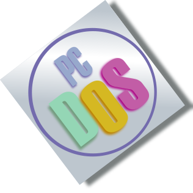
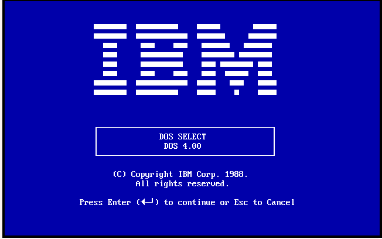
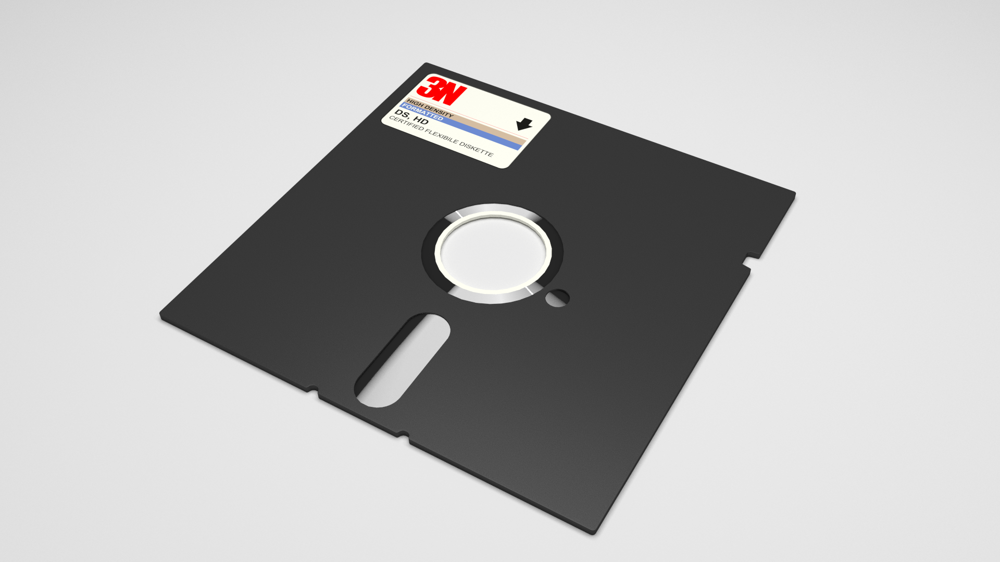

The First Microsoft Operating System
What Is It?
The picture you see before your eyes is the first Microsoft operating system ever made. It was an operating system capable of multi-tasking. Its operating system was called PC DOS. People still have this ancient operating system today. The machines that ran the operating system are worth over $20,000 on eBay. The machine was manufactured by the company known as IBM. This company is still around and still making machines. This article is about everything you'll need to know about the first Microsoft operating system.
More About The Operating System
The early IBM computers ran a Microsoft operating system called PC DOS. There is a picture above this paragraph of what it looks like. Try making a website on that, am I right? It was a command based operating system. If you wanted to work a computer job, you had to know the commands of the operating system. If you had a job with computers back in the 80's, you would make good money because the operating system was not the easiest to use and not a lot of people really wanted to learn it.
How Hard Was It To Set Up?
Windows has come a LONG way with their computer setup. Nowadays, you just have to choose certain settings layed out for you, but back then it was FAR different. You had to have multiple floppy disks with multiple different parts of the PC DOS setup. You may ask yourself, what the heck is a floppy disk? What does it look like? Well, I can answer both of those questions for you.
Floppy Disk:
A floppy disk was an external hard drive/USB for a computer. It was used for booting the computer and installing its operating system.
Since the 80's, Microsoft has become one of the biggest companies in the world. From creating one of the first operating systems, to making the most powerful console ever made. You owe all of this to Bill Gates and the other entrepreneurs who dared to dream.